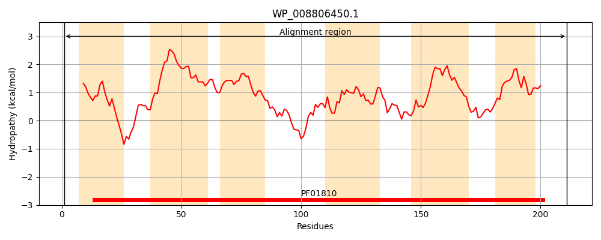
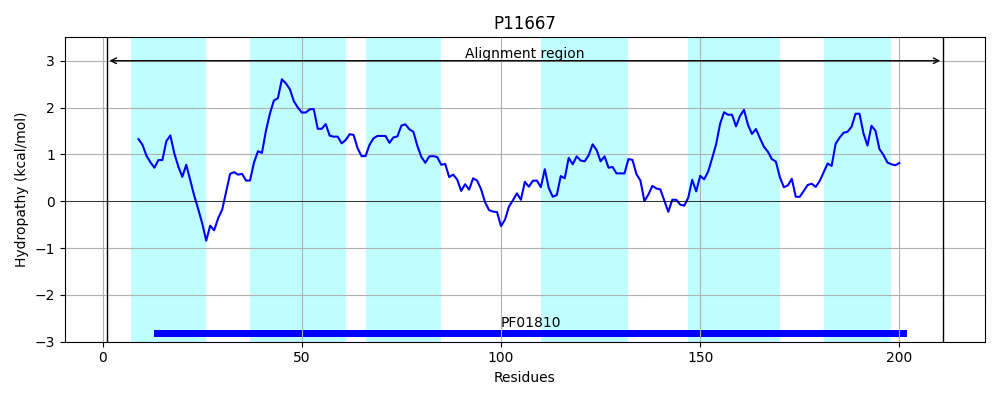
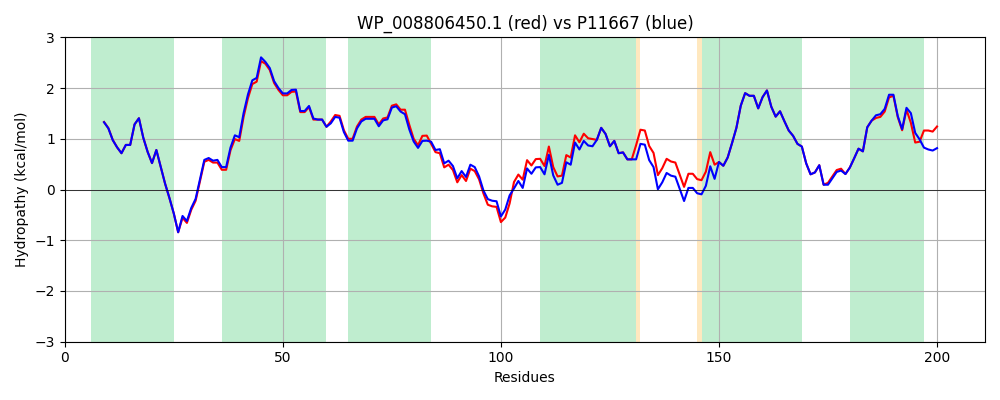

Hit Accession: P11667
Hit TCID: 2.A.75.1.2
Hit Description: gnl|BL_ORD_ID|9046 gnl|TC-DB|P11667|2.A.75.1.2 Hypothetical protein yggA - Escherichia coli.
Mach Len: 211
e:0.000000
Query TMS Count : 6
Hit TMS Count: 6
TMS-Overlap Score: 6.500000
Predicted Substrates:CHEBI:25094;lysine, CHEBI:2643;arginine, CHEBI:5733;histidine
BLAST Alignment:
Score: 1000 , Bit scores: 389 bits, E-value: 3.6e-140, Alignment length: 211, Percentage identity: 89
Query: 1 MFTYYFQGLALGAAMILPLGPQNAFVMNQGIRRQYHLMIALLCAVSDLLLICAGIFGGSALLMQSPWLLAIVTWGGVAFLLWYGFGALKTAFSQNLELASAEVMQQGRWKIIITMLAVTWLNPHVYLDTFVVLGSLGGQLAVEPKRWFALGTISASFLWFFGLALLAAWLAPRLRTAKAQRIINIVVGAVMWFIAFQLAKEGVGHILALLN 211
MF+YYFQGLALGAAMILPLGPQNAFVMNQGIRRQYH+MIALLCA+SDL+LICAGIFGGSALLMQSPWLLA+VTWGGVAFLLWYGFGA KTA S N+ELASAEVM+QGRWKII TMLAVTWLNPHVYLDTFVVLGSLGGQL VEPKRWFALGTISASFLWFFGLALLAAWLAPRLRTAKAQRIIN+VVG VMWFIA QLA++G+ H AL +
Sbjct: 1 MFSYYFQGLALGAAMILPLGPQNAFVMNQGIRRQYHIMIALLCAISDLVLICAGIFGGSALLMQSPWLLALVTWGGVAFLLWYGFGAFKTAMSSNIELASAEVMKQGRWKIIATMLAVTWLNPHVYLDTFVVLGSLGGQLDVEPKRWFALGTISASFLWFFGLALLAAWLAPRLRTAKAQRIINLVVGCVMWFIALQLARDGIAHAQALFS 211 | Protein Hydropathy Plots: |
|---|
|  |  |
Pairwise Alignment-Hydropathy Plot:
|
|---|
|  |